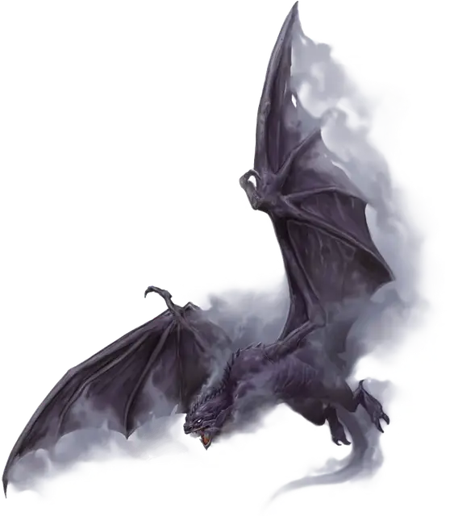

Сумрачный охотник
Gloomstalker
Большой Монстр, нейтрально-злой

Класс Доспеха 15 (природный доспех)
Хиты 90 (12к10 + 24)
Скорость 40 футов, летая 80 футов
| мод | спас | ||
|---|---|---|---|
| СИЛ | 22 | +6 | +9 |
| ЛОВ | 16 | +3 | +6 |
| ТЕЛ | 14 | +2 | +2 |
| мод | спас | ||
|---|---|---|---|
| ИНТ | 5 | −3 | −3 |
| МДР | 17 | +3 | +3 |
| ХАР | 14 | +2 | +2 |
Навыки Атлетика +9, Восприятие +6, Запугивание +5, Скрытность +6
Уязвимость к урону излучение
Чувства тёмное зрение 240 футов, пассивное Восприятие 16
Языки понимает Общий, но не говорит на нём
Опасность 6 (2300 опыта)
Бонус мастерства +3
Особенности
Чувствительность к солнечному свету. Находясь на солнечном свету, сумрачный охотник совершает с помехой броски атаки, а также проверки Мудрости (Восприятие), полагающиеся на зрение.
Теневой шаг. Сумрачный охотник бонусным действием может телепортироваться на расстояние до 40 фт. в свободное пространство, которое он может видеть.
Действия
Мультиатака. Сумрачный охотник совершает две атаки: одну Укусом и одну Когтями.
Укус. . Рукопашная атака оружием: +9 к попаданию, досягаемость 5 футов, одно существо. Попадание: 15 (2к8 + 6) колющего урона плюс 7 (2к6) урона некротической энергией.
Когти. . Рукопашная атака оружием: +9 к попаданию, досягаемость 5 футов, одна цель. Попадание: 13 (2к6 + 6) рубящего урона плюс 7 (2к6) урона некротической энергией.
Захват. . Рукопашная атака оружием: +9 к попаданию, досягаемость 5 футов, одно существо Среднего размера или меньше. Попадание: 13 (2к6 + 6) рубящего урона плюс 7 (2к6) урона некротической энергией, и цель схвачена (Сл высвобождения 17). Пока цель схвачена таким образом она опутана.
Вопль (Перезарядка 6). Сумрачный охотник издает ужасающий вопль. Каждый противник в пределах 60 футов от сумрачного охотника, который может его слышать, должен совершить спасбросок Телосложения Сл 13, иначе станет парализованным до конца своего следующего хода.
Описание
Сумрачный охотник- это ужасающий крылатый хищник, напоминающий виверну, состоящую из извивающихся теней, со светящимися глазами и похожими на кинжалы зубами.
Тени погибели. Родом из проклятых земель Царства Теней, эти ужасные существа охотятся в пустошах этого пустынного мира, обездвиживая добычу на своем пути своими горестными криками, прежде чем поднять её в небо своими когтями, после чего разорвать на части и пожрать.
Ночные охотники. Склонность сумрачного охотника к темноте делает его чрезвычайно опасным в ночи или в сильно затененных местах, где он может сливаться с их затененным окружением, но более опасным, чем одинокий охотник, является стая сумрачных охотников. Обычно встречаются небольшие стаи от трех до шести особей. Большие стаи из десяти или более особей, называемые остервенелыми, часто являются предвестниками грядущего большего зла.
Нарастающий ужас. Сумрачные охотники использовались арканистами и последователями Богов-Предателей в качестве скакунов в древних битвах Катастрофы. Приличное количество сумрачных охотников, теперь освободившихся от своего бремени, все еще держат скрытые логова, разбросанные по пустошам Хорхаса.